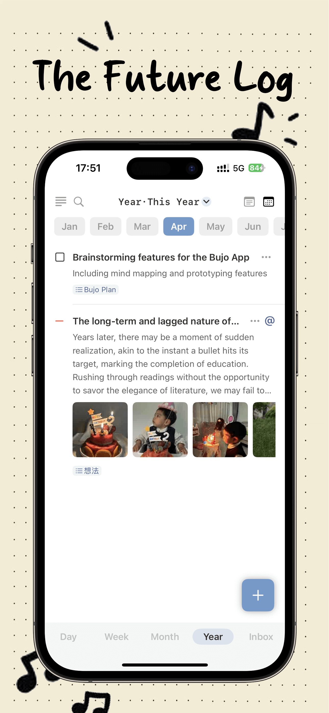
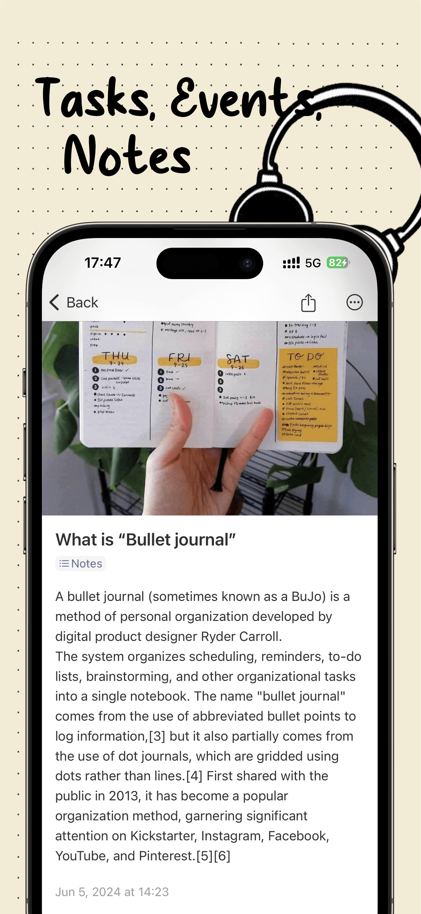
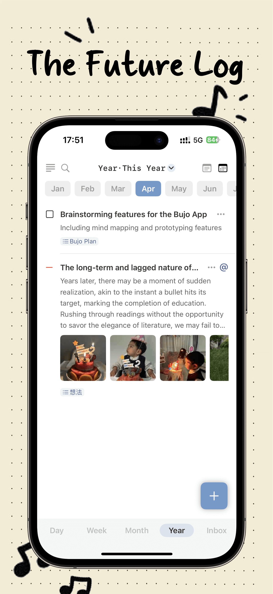
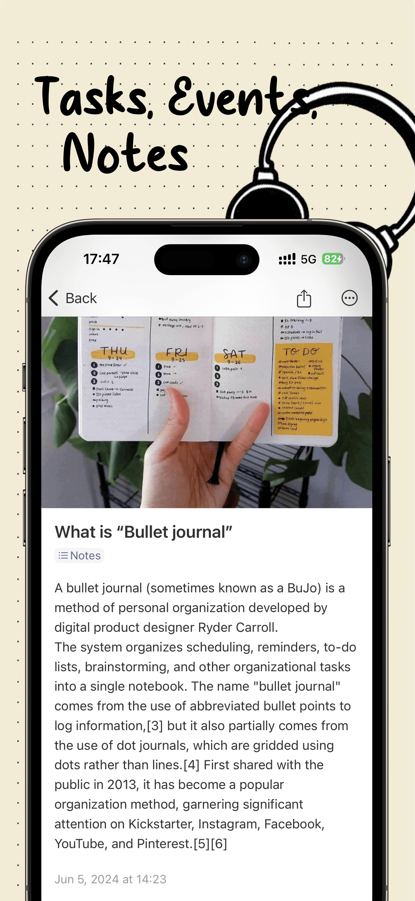
 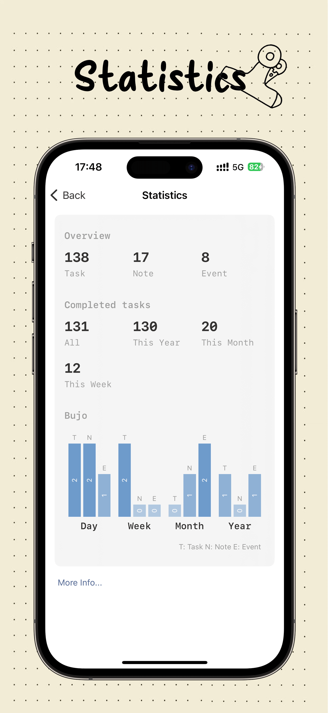
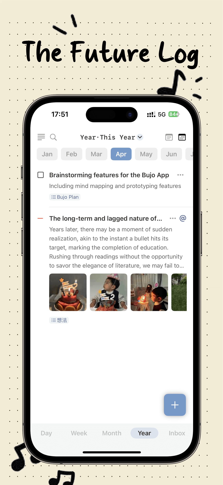
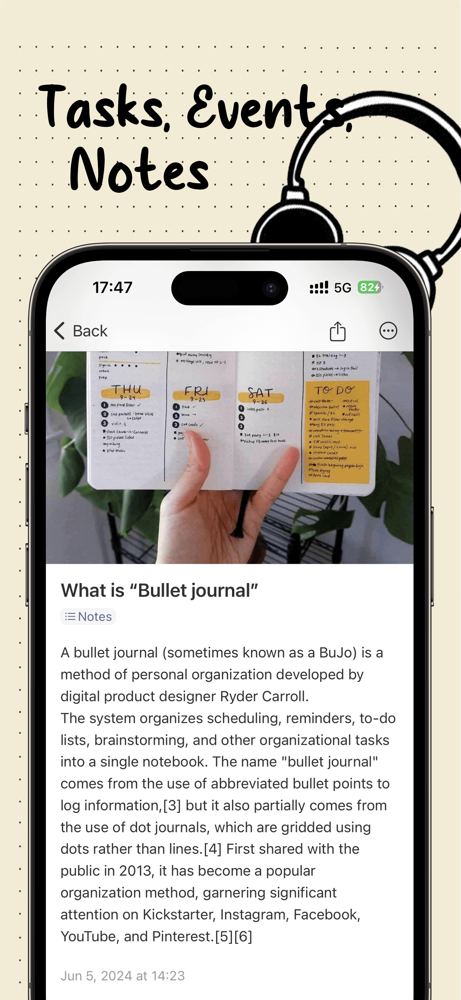
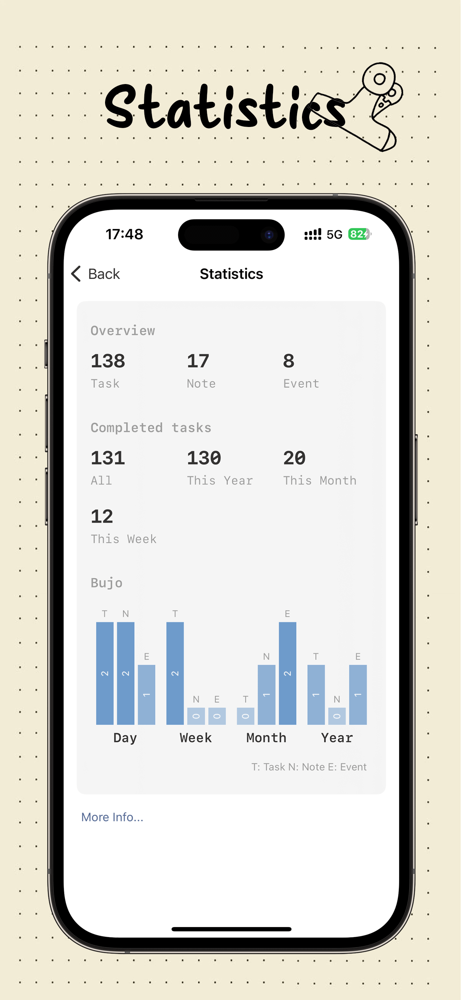
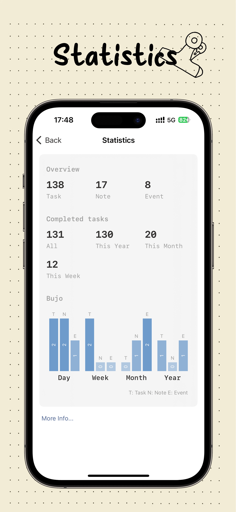
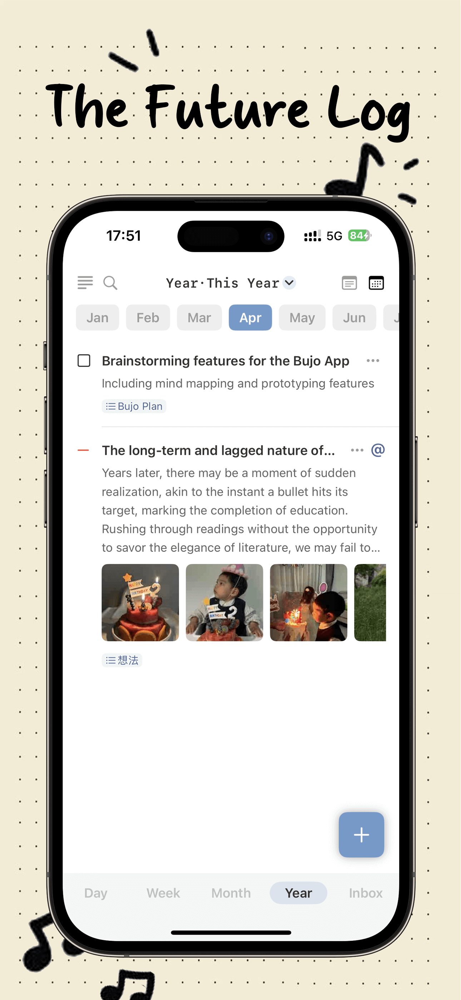
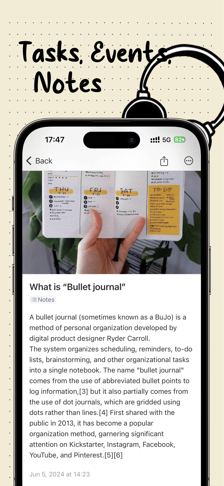
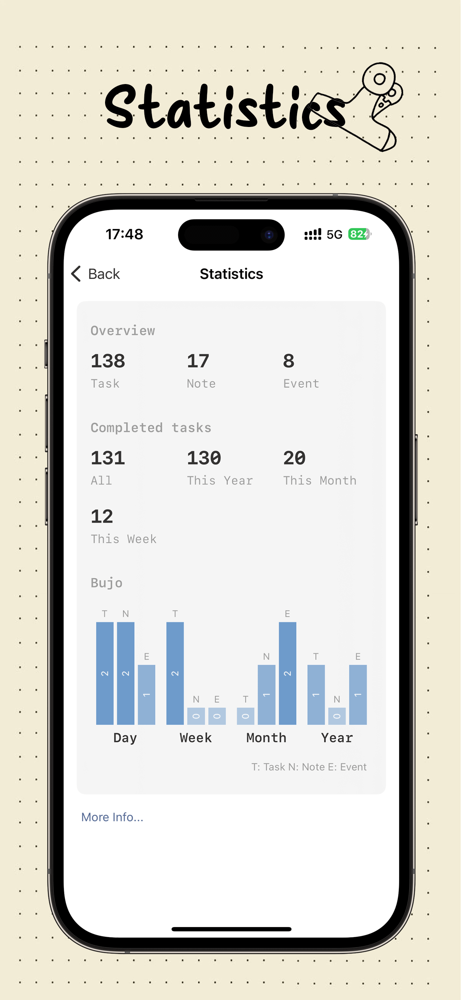
BujoFlow is a personal growth companion based on the Bullet Journal concept.
It is a task list, diary, planner, notepad, and can also be a notebook that encompasses all these features.
It allows us to quickly record tasks, events, and notes, as well as set goals, consolidating scattered notes.
It aims to help us track the past, manage the present, and plan for the future.